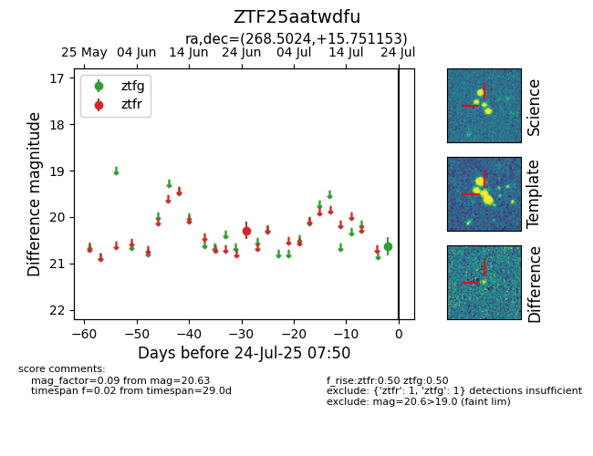

Target ZTF25aatwdfu at 2025-07-24 07:50, see:
FINK: fink-portal.org/ZTF25aatwdfu
Lasair: lasair-ztf.lsst.ac.uk/objects/ZTF25aatwdfu
ALeRCE: alerce.online/object/ZTF25aatwdfu
alt names
ZTF25aatwdfu (ztf,fink)
coordinates:
equatorial (ra, dec) = (268.5024,+15.75115)
galactic (l, b) = (41.0364,+19.64433)
photometry
last ztfg=20.63, ztfr=20.29
1 ztfg, 1 ztfr detections
